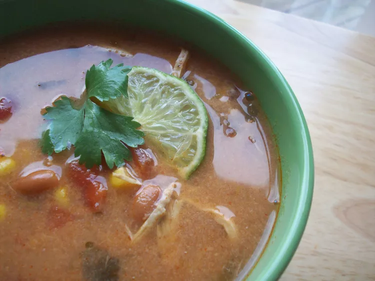

Chicken Tortilla Soup

Description
This crockpot tortilla soup tastes better than anything you can get at a restaurant.
It's healthy, too! Don't let the long list of ingredients fool you.
All you do is dump everything into the slow cooker and walk away.
Garnish with grated Cheddar, avocados, and a splash of fresh lime juice.
Ingredients
- 1 pound shredded, cooked chicken
- 1 (15 ounce) can whole peeled tomatoes, mashed
- (10 ounce) can enchilada sauce
- 1 (4 ounce) can chopped green chile peppers
- 1 medium onion, chopped
- 2 cloves garlic, minced
- 2 cups water
- 1 (14.5 ounce) can chicken broth
- 1 teaspoon cumin
- 1 teaspoon chili powder
- 1 teaspoon salt
- ¼ teaspoon black pepper
- 1 bay leaf
- 1 (10 ounce) package frozen corn
- 1 tablespoon chopped cilantro
- 7 corn tortillas
- 2 tablespoons vegetable oil, or as needed
Steps
- Place chicken, tomatoes, enchilada sauce, green chiles, onion, and garlic into a slow cooker. Pour in water and chicken broth; season with cumin, chili powder, salt, pepper, and bay leaf. Stir in corn and cilantro. Cover and cook on Low for 6 to 8 hours or on High for 3 to 4 hours.
- When the soup is almost finished, preheat the oven to 400 degrees F (200 degrees C).
- Lightly brush both sides of tortillas with oil. Cut tortillas into strips, then spread on a baking sheet.
- Bake in the preheated oven until crisp, 10 to 15 minutes. Sprinkle tortilla strips over soup before serving.